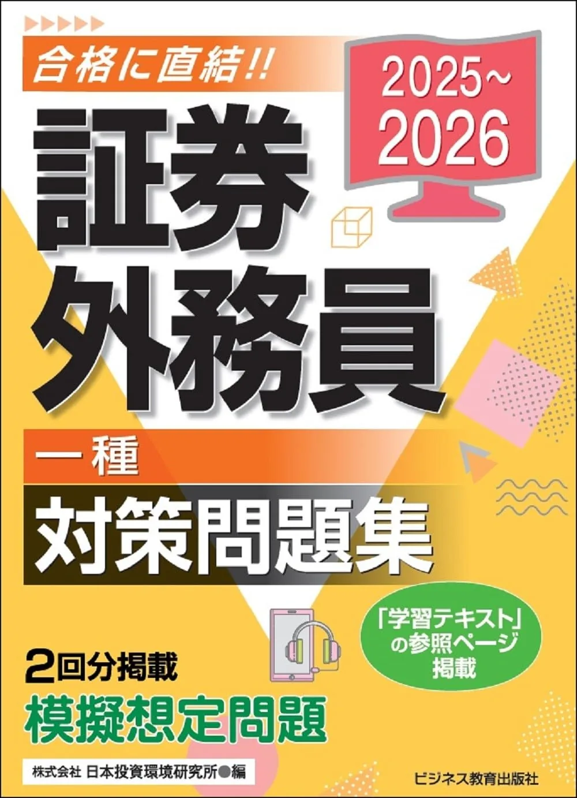

証券外務員試験のおすすめ問題集3選【科目別·模試付·2026】
証券外務員試験の問題集は、外務員必携と市販テキストの第1周後に1冊に絞るのが基本です。二種は70問120分·300点満点·210点合格、一種は100問160分·440点満点·308点合格。合否は総合7割のみ（分野別最低ラインなし·要項で再確認）です。本記事は2025-2026年度版の問題集3冊を、演習形式·テキスト系列·受験区分の観点で比較します。
この記事の信頼性について
| 執筆 | 証外マスター編集部（資格学習サイトの編集チーム） |
|---|---|
| 確認 | 公式情報確認担当（公開前に一次情報との照合を行う担当者） |
| 事実確認日 | 2026-06-16 |
| 主な参照元 |
1問題集を選ぶ3基準（演習量·系列·購入タイミング）
問題集は「解く量」と「テキスト·必携との系列一致」で選びます。テキスト第1周前に問題集だけ増やすと、誤答原因の分析が難しくなります。選ぶ前に要項で一種/二種と70問120分または100問160分を確認し、次の3点で比較してください。具体例として8月31日時点でテキスト40%到達なら、9月7日までに1冊決定·週15問開始、が12週逆算と整合します。
| 観点 | 確認内容 |
|---|---|
| 購入タイミング | テキスト第1周40%以降·9月第1週まで |
| 系列 | うかる·BEP·TACなど出版社をテキストと揃える |
| 演習形式 | 科目別短問 vs 巻末通し模擬 |
テキスト選びは 証券外務員試験のおすすめテキスト3選、演習サイクルは 証券外務員試験の過去問·模試の使い方 が詳しいです。本記事は市販問題集3冊の比較に特化します。
おすすめ問題集3選（比較）
価格·在庫·版情報は執筆時点（2026-06-16）のAmazon税込参考です。購入前に必ず販売ページでご確認ください。
| 順位 | 商品名 | 価格（税込参考） | ページ数 | 向いている人 |
|---|---|---|---|---|
| 1 | うかる! 証券外務員一種 必修問題集 2025-2026年版 | ¥2,530 | 472 | 一種100問160分·科目別演習と巻末模擬試験を1冊で回したい人 |
| 2 | うかる! 証券外務員二種 最速問題集 2025-2026年版 | ¥2,310 | 351 | 二種70問120分·210点合格を最速問題集1冊で演習したい人 |
| 3 | 2025-2026 証券外務員 一種 対策問題集 | ¥1,870 | 338 | 学習テキストと同系列·338ページで科目別演習を回したい一種受験者 |

うかる! 証券外務員一種 必修問題集 2025-2026年版
- 左ページ問題·右ページ解説の科目別構成
- 必修テキストと章リンクで復習が往復しやすい
- 巻末模擬試験で通し100問160分の練習ができる
うかる! 証券外務員二種 最速問題集 2025-2026年版
- 二種出題範囲に絞った351ページのコンパクト構成
- 最速テキストとページリンクで弱点章へ戻りやすい
- 巻末模擬試験で70問120分の通し感覚を確認できる

2025-2026 証券外務員 一種 対策問題集
- 問題·解答·解説の科目別構成（338ページ）
- 学習テキスト（一種·二種対応）と出版社を揃えやすい
- 2025-2026版·Amazon在庫あり（2026-2027版は未掲載）
23冊の比較表（価格·ページ·演習形式）
比較表は「安い順」ではなく、受験区分と演習スタイルで判断してください。執筆時点（2026-06-16）のAmazon税込参考です。購入前に再確認が必要です。
| 順位 | 書名（略） | 区分 | ページ | 価格参考 | 演習形式 |
|---|---|---|---|---|---|
| 1位 | うかる!必修問題集 | 一種 | 472 | 2,530円 | 科目別+巻末模試 |
| 2位 | うかる!最速問題集 | 二種 | 351 | 2,310円 | 科目別+巻末模試 |
| 3位 | BEP一種対策問題集 | 一種 | 338 | 1,870円 | 科目別演習 |
- 一種308点合格なら1位か3位
- 二種210点合格なら2位
- という切り分けが定番
3冊同時購入は避け、1冊80%使い切ってから次を検討してください。二種向けの別選択肢としてBEP二種対策問題集（4828311154·税込参考1,650円）もあります。
31位：うかる!必修問題集（一種·472ページ·模試付）
「うかる! 証券外務員一種 必修問題集 2025-2026年版」は、日経BP·472ページ·左ページ問題·右ページ解説の科目別構成です。18章に分かれた科目別問題の後、第2部に模擬試験が収録されています。必修テキスト（4296050826）へのページリンクがあり、うかる系列でテキスト→問題集の往復がしやすい1冊です。Amazon税込参考2,530円（執筆時点）。
| 項目 | 内容 |
|---|---|
| 向く人 | 一種100問160分·演習量最優先 |
| 強み | 科目別+巻末模試·テキスト連動 |
| 注意 | 二種のみ受験なら範囲が広い |
向いている人：一種308点合格を目標に、10月·11月に100問160分通し演習を月2回入れたい人。
- 一例として9月第2週から週15問
- 10月7日と11月4日に巻末模擬または通し演習
- という12週逆算と相性がよい
42位：うかる!最速問題集（二種·351ページ·模試付）
「うかる! 証券外務員二種 最速問題集 2025-2026年版」は、日経BP·351ページ·二種出題範囲に絞った構成です。最速テキストとページリンクがあり、二種70問120分·210点合格の演習に特化しています。巻末模擬試験で70問120分の通し練習が可能です。Amazon税込参考2,310円（執筆時点·定価2,530円）。
| 項目 | 内容 |
|---|---|
| 向く人 | 二種70問120分·210点合格 |
| 強み | 二種範囲のみ·コンパクト351p |
| 注意 | 一種受験には範囲不足 |
向いている人：二種独学で、一種向け472ページより短サイクルで回したい人。
- 例として9月から週15問
- 10月·11月に70問120分通しを月1回
- という配分が 証券外務員試験の勉強計画の立て方 の16週例と整合し
学習テキスト（4828311521）利用者はBEP二種問題集も検討できます。
53位：BEP一種対策問題集（338ページ·2025-2026版）
「2025-2026 証券外務員 一種 対策問題集」は、ビジネス教育出版社·338ページ·Amazon税込参考1,870円です。問題·解答·解説の科目別構成で、学習テキスト（4828311521）と同出版社の系列問題集です。2026-2027版は2026年6月時点でAmazon未掲載のため、購入は在庫のある2025-2026版を確認してください。
| 項目 | 内容 |
|---|---|
| 向く人 | BEP学習テキスト利用者·演習量と価格のバランス重視 |
| 強み | 338p科目別·テキスト系列·低価格帯 |
| 注意 | 巻末通し模試は別冊模試記事で補完 |
向いている人：学習テキストで第1周を終え、同出版社の問題集で章番号を揃えたい一種308点合格志望者。具体例として9月第2週から週15問、11月に100問160分通しは 証券外務員試験の過去問·模試の使い方 か証券外務員試験のおすすめ模試・直前問題集3選 の予想模試で補完するのが現実的です。
6テキスト→問題集→通し演習（12週例）
問題集はテキストの理解確認層です。6月16日開始·残り12週·週8時間の例です。
| 時期 | インプット | 演習 |
|---|---|---|
| 6〜7月 | 必携+市販テキスト | 当サイト分野別10問/週 |
| 8月 | テキスト第1周 | 週10問·正答数1行記録 |
| 9月第1週 | 問題集1冊決定 | 週15問開始 |
| 10〜11月 | 弱点章を必携へ | 通し70問120分または100問160分·月2回 |
誤答は 証券外務員試験の誤答ノートの作り方 の4分類（知識不足·読解·時間·ケアレス）で記録し、3日後·7日後に同じ問題IDを解き直してください。時間配分の練習は 証券外務員試験の制限時間演習 と 証券外務員試験当日の流れ を併読すると、通し演習の記録フォーマットが統一されます。
7購入順序と次に読む記事
教材の購入順序は固定です。①外務員必携4巻 → ②市販テキスト1冊 → ③問題集1冊 → ④模試·直前（任意）。③はテキスト第1周40%到達後、8週前までに版を固定してください。
・テキスト比較 → おすすめテキスト3選
・演習サイクル → 過去問·演習の使い方
・誤答管理 → 誤答ノートの作り方
・時間配分 → 制限時間演習
直前の予想模試·通し演習強化は、問題集1冊を80%使い切った後半（残り8週以降）に検討するのが基本です。
8よくある質問
問題集はいつ買えばよいですか？
科目別演習と通し模擬の違いは？
当サイトの演習だけで足りますか？
記事の基本情報
| ジャンル | 独学対策 |
|---|---|
| タグ | 独学 / 教材 / 学習計画 |
公式情報の確認
公式情報の確認：証券外務員（一種・二種）の最新情報は、日本証券業協会（公式）などの公式情報を必ず確認してください。本人に割り当てられた試験会場は受験票の表記が正本です。